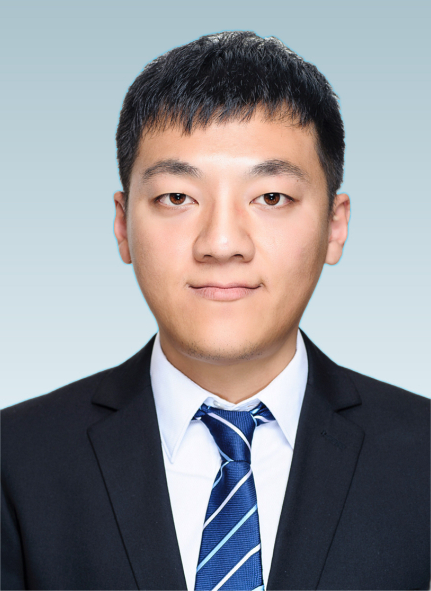

Manting XIE (谢满庭)
Associate Professor
School of Mathematics, Tianjin University
Office: Room 403, Building 58
Address: No. 135, Ya Guan Road, Jinnan District, Tianjin 300350, China
Email: mtxie@tju.edu.cn, xiemanting@lsec.cc.ac.cn
Latest News
2026
- Our paper "A structure-preserving Fourier spectral method for computing the Bogoliubov-de Gennes excitations of spin-1 Bose-Einstein Condensates" has been accepted by Multiscale Model. Simul.
- Our paper "A novel augmented subspace adaptive finite element method for the eigenvalue problem with discontinuous coefficients" has been accepted by SIAM J. Numer. Anal.
- Our paper "Computing the Bogoliubov-de Gennes excitations of two-component Bose-Einstein condensates" has been accepted by J. Comput. Phys.
2025
- We have obtained the National Natural Science Foundation of China (NSFC) General Program (No. 12571437).
Brief CV
Education
- 2012/09-2017/06 Institute of Computational Mathematics, University of Chinese Academy of Sciences, Ph.D., Supervisor: Academician Qun Lin and Prof. Hehu Xie
- 2008/09-2012/06 School of Mathematical Sciences, Shandong Normal University, BSc
Work Experience
- 2025/04-Now Associate Professor, School of Mathematics, Tianjin University, China.
- 2023/07-2025/03 Associate Professor, Center for Applied Mathematics, Tianjin University, China.
- 2017/07-2023/06 Assistant Professor, Center for Applied Mathematics, Tianjin University, China.
Research Interests
- Mathematics and numerics in Bose-Einstein Condensates
- Numerical methods for Eigenvalue problems in PDE
- Finite element method, approximation theory and applications
- Scientific computing, numerical analysis and applied mathematics in general
Research Grants
- 2026/01-2029/12, Theoretical analysis and numerical methods for eigenvalue problems in spin-orbit-coupled dipolar Bose-Einstein condensates, NSFC, No.12571437, (PI)
- 2023/01-2026/12, Mathematical analysis and numerical methods for the droplet dipolar Bose-Einstein Condensates, NSFC, No.12271400, (Co-PI)
- 2021/01-2023/12, Research on the efficient finite element methods for steady states of rotating dipolar Bose-Einstein Condensates, NSFC, No.12001402, (PI)
- 2021/01-2024/12, Operator Splitting Methods for Several Classes of Inverse Coefficients of Partial Differential Equations, NSFC, No.12071343, (Co-PI)
Teaching
Undergraduate Courses
- Calculus I @ Tianjin University (TJU), 96 class hours, 2025 autumn
- Numerical Linear Algebra @ Tianjin University (TJU), 48 class hours, 2025 autumn
- Numerical Linear Algebra @ Tianjin University (TJU), 48 class hours, 2024 autumn
- Numerical analysis @ Tianjin University (TJU), 96 class hours, 2023 spring
- Advanced mathematics (2B) @TJU, 80 class hours, 2022 spring
- Topics in Mathematical Analysis (B) @TJU, 48 class hours, 2021 spring
- Linear algebra and its applications @TJU, 56 class hours, 2020 spring
- Linear algebra and its applications @TJU, 56 class hours, 2019 autumn
- Linear algebra and its applications @TJU, 76 class hours, 2018 autumn
- Linear algebra and its applications @TJU, 56 class hours, 2018 spring
- Probability theory @TJU, 32 class hours, 2017 autumn
Postgraduate Courses
- Fundamentals of Engineering Mathematics @TJU, 80 class hours, 2018 spring
Collaborators and Students
Collaborators
- Yu Li (Lecturer, Tianjin University of Finance and Economics)
- Qinglin Tang (Professor, Sichuan University)
- Hehu Xie (Professor, Institute of Computational Mathematics, CAS)
- Fei Xu (Associate Professor, Beijing University of Technology)
- Meiling Yue (Associate Professor, Beijing Technology and Business University)
- Yong Zhang (Professor, Tianjin University)
Graduate Students
- 2025, Yiyang JI & Jiameng CAO & Lingqi ZHANG @TJU
- 2024, Yi DING & Jie GAO @TJU
Cooperant Students
- Shaobo Zhang (Sichuan University)
- Xin Liu (East China Institute of Technology)
- Zhixuan Li (Sichuan University)
Undergraduate Students
- 2025, Zhehan Wang & Haoyu Jin @TJU
- 2024, Yiyang JI & Suxiang Wu @TJU
- 2023, Hongwei FAN @TJU
- 2022, Yuankun SHI & Qianlong LIU @TJU
- 2021, Yun HAO & Caiqi LI @TJU
Useful Links
Academic Journals
SIREV Acta Numer. SISC SINUM Numer. Math. Math. Comp. M3AS MMS JCP IMAJNA JSC JCM CiCP